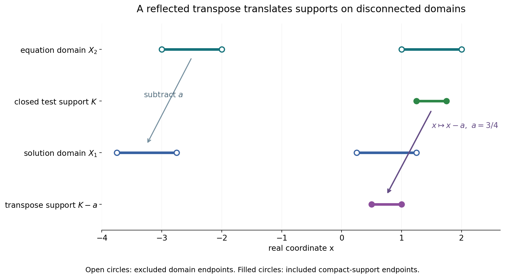
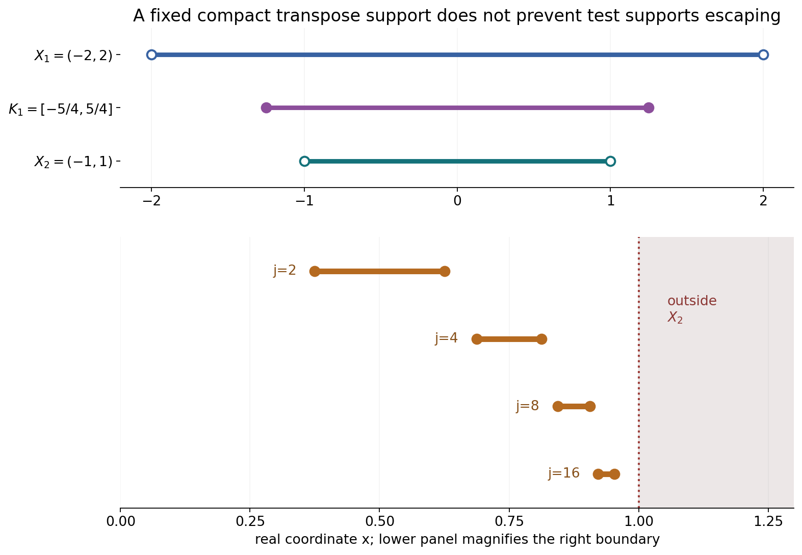

Smooth forcing, invertible kernels and support confinement
Written by GPT-6.1 Sol (OpenAI), Ultra reasoning effort, October 2026. Self-checked by the writing AI, GPT-6.1 Sol (OpenAI). Public domain (CC0).
Two necessary conditions arise when a convolution equation is solvable for smooth forcing. Compact smooth forcing already requires slow Fourier decrease of the kernel. Allowing every smooth forcing also prevents transpose-test supports from escaping toward the boundary while their convolutions remain in a fixed compact set. We explain the common estimate, work through kernels with and without zeros, and exhibit the boundary obstruction.
Basic references are Grubb's Fourier-distribution notes, Melrose's tempered-distribution notes, and Hörmander's The Analysis of Linear Partial Differential Operators, volumes I and II. Read Slow decrease and entire Fourier division for the definition and equivalent characterizations of an invertible compact distribution, and Frequency-selective singularities and smooth convolutions for the arbitrarily localized nonsmooth factor used in the proof. The complete argument below includes the Baire estimate and both necessary conditions.
1. Two levels of smooth forcing
Let \(X_1,X_2\subset\mathbb R^n\) be nonempty open sets with
\[ X_2-\operatorname{supp}\mu\subset X_1. \tag{L1} \]Our convolution and bilinear transpose are
\[ (\mu*u)(x)=\mu_y(u(x-y)),\qquad \langle\mu*u,v\rangle=\langle u,\check\mu*v\rangle, \quad \check\mu(\phi)=\mu(\phi(-\,\cdot)). \tag{L2} \]The compatibility condition makes the transpose test compactly supported inside \(X_1\). Neither domain needs to be convex or connected.
If every \(f\in C_c^\infty(X_2)\) has a distributional solution on \(X_1\), then \(\mu\) is invertible. One exact formulation is: for some \(A>0\),
\[ \sup_{|\zeta-c|<A\log(2+|c|)}|F_\mu(\zeta)| >(A+|c|)^{-A} \quad(c\in\mathbb R^n,\ \zeta\in\mathbb C^n). \tag{L3} \]Zeros of \(F_\mu\) are allowed. “Invertible” does not mean that its pointwise reciprocal is entire or that a compact convolution inverse exists.
Under the stronger hypothesis of a distributional solution for every \(f\in C^\infty(X_2)\), one additionally has:
\[ \begin{gathered} \text{for every compact }K_1\subset X_1 \text{ there is compact }K_2\subset X_2\text{ such that}\\ v\in C_c^\infty(X_2),\ \operatorname{supp}(\check\mu*v)\subset K_1 \ \Longrightarrow\ \operatorname{supp}v\subset K_2. \end{gathered} \tag{L4} \]The compact \(K_2\) is uniform over all such tests \(v\). Conditions (L3) and (L4) are necessary here; their sufficiency on general domains requires additional arguments.
2. Why one complete space is enough
Write \(B(f,v)=\int fv\). For fixed \(v\), it is continuous in \(f\). For fixed \(f\), choose a solution \(u_f\), and use
\[ B(f,v)=u_f(\check\mu*v). \tag{L5} \]When the transpose tests have one compact support, distributional continuity gives an order and constant that can initially depend on \(f\). Baire's theorem removes that dependence.
The precise lemma requires only completeness of the first variable. With increasing seminorms \(q_N\) on a Fréchet space \(F\) and \(p_M\) on a second vector space \(V\), separate bounds imply
\[ |B(f,v)|\le Cq_N(f)p_M(v) \tag{L6} \]for one \(C,N,M\). The closed sets \(\{f:|B(f,v)|\le m p_m(v)\text{ for all }v\}\) cover \(F\). One has interior; subtracting two points in that interior and rescaling yields the bound. No continuous choice of solutions and no completeness of \(V\) is required.
For compact forcing, take \(F\) to be the complete space of smooth tests supported in a fixed compact \(K\subset X_2\). The estimate says that every derivative of a regularized compact \(w\) whose transpose convolution is smooth has the same distributional order \(N\). Constants may depend on the derivative. Fourier tests then give
\[ |\xi^\gamma F_w(\xi)|\le C_\gamma(1+|\xi|)^N \quad\hbox{for every }\gamma. \tag{L7} \]Taking arbitrarily large coordinate powers makes \(F_w\) rapidly decreasing; Fourier inversion makes \(w\) smooth. The available localized smoothing-factor theorem contradicts this if the kernel is not invertible.
For arbitrary smooth forcing, take \(F=C^\infty(X_2)\). Its resulting seminorm sees only one compact \(K_2\). A test \(v\) nonzero outside \(K_2\) can be detected by \(f=\theta\overline v\) supported there: the seminorm is zero, whereas \(\int fv=\int\theta|v|^2>0\). That proves support confinement.
3. Four worked examples
Example 1: a translated point mass on disconnected domains
Take \(a=3/4\), \(\mu=\delta_a\), and
\[ X_2=(-3,-2)\cup(1,2),\qquad X_1=X_2-a=(-15/4,-11/4)\cup(1/4,5/4). \tag{L8} \]For every smooth \(f\) on \(X_2\), the smooth function \(u(t)=f(t+a)\) on \(X_1\) satisfies
\[ (\delta_a*u)(x)=u(x-a)=f(x). \tag{L9} \]Disconnectedness creates no obstruction for this compatible translated pair.
Its transform is \(F_\mu(\zeta)=e^{-ia\zeta}\), of modulus one on the real axis. In (L3), choose \(A=2\) and use \(\zeta=c\). Then \(1>(2+|c|)^{-2}\), with a positive window radius, proving slow decrease directly.
Also \((\check\mu*v)(t)=v(t+a)\), so its support is \(\operatorname{supp}v-a\). For a compact \(K_1\subset X_1\), choose \(K_2=K_1+a\subset X_2\); this proves (L4) exactly.

Open circles mark the excluded endpoints of the domains in (L8). The closed test support \(K=[5/4,7/4]\) lies in the right component of \(X_2\). Its transpose support is \(K-a=[1/2,1]\), inside the right component of \(X_1\). The arrow subtracts \(a=3/4\); the domain translation and the transpose reflection use the same physical coordinates.
Example 2: an averaging kernel with characteristic zeros
Let \(\mu\) have density \(1/2\) on \([-1,1]\). Its entire transform is
\[ F_\mu(\zeta)=\frac{\sin\zeta}{\zeta},\qquad F_\mu(0)=1. \tag{L10} \]For each real \(c\), choose a nearest point \(t=\pi/2+k\pi\). Then \(|t-c|\le\pi/2\), \(|\sin t|=1\), and
\[ |F_\mu(t)|=\frac1{|t|} \ge\frac1{|c|+\pi/2}>(3+|c|)^{-3}. \tag{L11} \]The inequality is strict because \(|c|+\pi/2<|c|+3<(3+|c|)^3\). The point lies in the complex window with \(A=3\), since \(3\log(2+|c|)\ge3\log2>\pi/2\). Thus the kernel is invertible despite its infinitely many real zeros.
There is also a direct solution for every compact smooth \(f\) on the real line:
\[ u(x)=2\sum_{k=0}^{\infty}f'(x-1-2k). \tag{L12} \]The sum is locally finite, since its arguments eventually lie below the compact support of \(f'\), uniformly on any bounded set of \(x\). Hence \(u\) is smooth. Its average telescopes:
\[ \begin{aligned} (\mu*u)(x) &=\sum_{k=0}^{\infty} \bigl[f(x-2k)-f(x-2-2k)\bigr]\\ &=f(x). \end{aligned} \tag{L13} \]Every integration involves only finitely many terms on the compact averaging interval. The formula proves this compact-forcing example; it does not claim that the displayed series remains locally finite for noncompact forcing.
Example 3: a smooth compact kernel and analytic forcing
Let
\[ b(y)= \begin{cases} (1+y/3)e^{-1/(1-4y^2)},&|y|<1/2,\\ 0,&|y|\ge1/2, \end{cases} \qquad d\mu(y)=b(y)\,dy. \tag{L14} \]The flat exponential makes every derivative vanish at the endpoints: each derivative is bounded by finitely many powers of \((1-4y^2)^{-1}\) times the decaying exponential. Thus \(b\) is smooth, compactly supported and positive inside its support.
This kernel is not invertible. Fix any candidate \(A>0\). Integration by parts \(m\) times gives
\[ |F_\mu(\zeta)|\le \|b^{(m)}\|_1|\zeta|^{-m} e^{|\operatorname{Im}\zeta|/2}. \tag{L15} \]For large real \(c>0\) and \(|\zeta-c|<A\log(2+c)\), one has \(|\zeta|\ge c/2\). Therefore the window supremum is at most \(2^m\|b^{(m)}\|_1c^{-m}(2+c)^{A/2}\). Choose an integer \(m>3A/2\). This is \(o(c^{-A})\), violating the lower bound in (L3) for large \(c\). Since \(A\) was arbitrary, the kernel is not slowly decreasing.
The necessity theorem consequently excludes solvability for every compact smooth forcing on any compatible pair of nonempty open domains. Yet the particular analytic forcing \(f(x)=e^x\) has a smooth entire solution on the line:
\[ d=\int_{-1/2}^{1/2}b(y)e^{-y}\,dy>0,\qquad u(x)=e^x/d,\qquad \mu*u=e^x. \tag{L16} \]Direct integration verifies the identity. Solving selected analytic forcing does not imply the universal compact smooth-forcing hypothesis.
Example 4: an invertible kernel with a boundary obstruction
Take \(\mu=\delta_0\), \(X_1=(-2,2)\), \(X_2=(-1,1)\). Every compact smooth \(f\) on \(X_2\) extends by zero to a smooth function on \(X_1\), and that extension solves the equation. The kernel is invertible.
Choose a nonzero smooth bump \(\beta\) supported exactly in \([-1,1]\), positive inside, and set for \(j\ge2\)
\[ v_j(x)=\beta\bigl(4j(x-1+1/j)\bigr),\qquad \operatorname{supp}v_j= [1-5/(4j),\,1-3/(4j)]. \tag{L17} \]Each test lies in \(C_c^\infty(X_2)\). Its transpose convolution is itself, and all these supports fit in \(K_1=[-5/4,5/4]\subset X_1\). They cannot fit in one compact \(K_2\subset X_2\), since they approach the excluded endpoint \(1\). Condition (L4) fails. Hence the equation cannot be solved distributionally on \(X_1\) for every smooth \(f\) on \(X_2\).
An explicit obstructed forcing is \(f(x)=e^{1/(1-x)}\). Suppose a distribution \(u\) on \(X_1\) agreed with it on \(X_2\). Let \(\chi\) be a nonnegative smooth bump supported in \([-1,1]\), with \(Z=\int\chi>0\), and for small \(h>0\) put
\[ \phi_h(x)=\chi\bigl((x-1+2h)/h\bigr). \tag{L18} \]Its support is \([1-3h,1-h]\subset X_2\), inside one fixed compact neighborhood of \(1\) in \(X_1\). Finite distributional order gives \(|u(\phi_h)|\le C h^{-N}\) for fixed \(C,N\). But positivity yields
\[ u(\phi_h)=\int f\phi_h\ge hZ\,e^{1/(3h)}. \tag{L19} \]The right side grows faster than every power \(h^{-N}\), a contradiction. For example, the exponential series lower bound of degree \(N+2\) already makes \(h^{N+1}e^{1/(3h)}\) tend to infinity. This forcing is smooth inside \(X_2\), although it has no distributional extension across the endpoint.

For \(j=2,4,8,16\), the bars are the exact closed intervals in (L17). Their right endpoints approach \(1\). The fixed compact \(K_1=[-5/4,5/4]\) belongs to the larger solution domain. The open equation domain excludes \(1\); no single compact subset of it contains the entire test family.
4. Exercises and full solutions
The ten exercises total 100 points. Each solution states the hypotheses used in its argument.
Exercise 1 (10 points; introductory). For \(\mu=\delta_{-2/3}\), let \(X_2=(0,1)\cup(3,4)\) and \(X_1=X_2+2/3\). Determine the transpose action and one smooth solution for every smooth forcing on \(X_2\). State the support confinement compact associated to \(K_1\subset X_1\).
Solution. Here \(a=-2/3\). The transpose kernel is \(\delta_{2/3}\), so \((\check\mu*v)(t)=v(t-2/3)\), with support \(\operatorname{supp}v+2/3\). The solution \(u(t)=f(t-2/3)\) on \(X_1\) satisfies \((\mu*u)(x)=u(x+2/3)=f(x)\). If the transpose support is inside \(K_1\), the original support lies in \(K_2=K_1-2/3\). This is compact inside \(X_2\). No convexity or connectedness has entered. On real frequencies the transform has modulus one, and \(A=2\) in (L3) gives a strict lower bound.
Exercise 2 (10 points; intermediate). Verify (L12)–(L13) for an arbitrary compact smooth \(f\). Explain why replacing “compact smooth” by “smooth” in the locally finite series argument is unjustified.
Solution. Let \(\operatorname{supp}f\subset[-R,R]\). On a bounded interval of \(x\), the values \(x-1-2k\) eventually lie below \(-R\), uniformly for all \(x\) there, so every derivative of the sum is locally finite. For each \(k\),
\[ \frac12\int_{-1}^{1}2f'(x-y-1-2k)\,dy =f(x-2k)-f(x-2-2k). \tag{S1} \]The factor \(1/2\) cancels the prefactor \(2\). Relabel the second term in the finite sum to obtain \(f(x)-f(x-2L-2)\) after indices \(0,\ldots,L\). For sufficiently large \(L\) the final value is zero. This proves the identity everywhere. A general smooth function need not vanish at any of those negative arguments; for \(f(x)=e^{-x}\), even the terms in (L12) grow exponentially with \(k\). The particular series then does not define a solution, irrespective of what another solvability theorem might provide.
Exercise 3 (8 points; intermediate). Show directly that the averaging kernel satisfies (L3) with \(A=3\). At the center \(c=\pi\), identify a point of its window where its transform is nonzero.
Solution. The grid \(\pi/2+k\pi\) has spacing \(\pi\), so every real \(c\) lies within \(\pi/2\) of some grid point \(t\). Its sine has modulus one, and \(|t|\le|c|+\pi/2\). Since \(3\log2>\pi/2\), the point is strictly inside the window. Inequality (L11) gives the required strict lower bound. At \(c=\pi\), either \(t=\pi/2\) or \(t=3\pi/2\) works. Although \(F_\mu(\pi)=0\), these nearby values are \(2/\pi\) and \(-2/(3\pi)\), respectively. The theorem concerns a window supremum, not the value at its center.
Exercise 4 (10 points; advanced). Reconstruct the complete-first-variable argument for (L6). Address a nonzero \(f\) whose chosen seminorm \(q_N(f)\) is zero, and state whether completeness of \(V\) is needed.
Solution. The sets \(E_m=\{f:|B(f,v)|\le m p_m(v)\text{ for all }v\}\) are closed because \(B(\,\cdot\,,v)\) is continuous for each \(v\). They cover the complete first space by the separate bound and monotonicity of the second seminorms. Baire supplies \(f_0+\{h:q_N(h)<\delta\}\subset E_m\). Subtracting the inequalities for \(f_0+h\) and \(f_0\) gives \(2m p_m(v)\). For positive \(q_N(f)\), scaling by \(\delta/(2q_N(f))\) gives \(4m q_N(f)p_m(v)/\delta\). If \(q_N(f)=0\), every multiple \(tf\) lies in the neighborhood, so \(|t||B(f,v)|\le2m p_m(v)\) for arbitrary \(t\). Hence \(B(f,v)=0\). The closed sets and the Baire theorem belong to \(F\); neither completeness nor a Hausdorff topology on \(V\) is used.
Exercise 5 (10 points; advanced). In two real dimensions suppose that for every multi-index \(\gamma\), \(|\xi^\gamma F(\xi)|\le C_\gamma(1+|\xi|)^3\). Prove a bound \(|F(\xi)|\le C_r(1+|\xi|)^{-r}\) for any integer \(r\ge0\), assuming continuity on bounded sets.
Solution. For \(|\xi|\ge1\), one of its coordinates has modulus at least \(|\xi|/\sqrt2\). Choose \(\gamma=(3+r)e_k\) for that coordinate. The two corresponding constants have a finite maximum \(C_*\). Thus
\[ |F(\xi)|\le C_*2^{(3+r)/2}|\xi|^{-3-r} (1+|\xi|)^3 \le C_*2^{(3+r)/2+3+r}(1+|\xi|)^{-r}. \tag{S2} \]We used \((1+|\xi|)^3\le2^3|\xi|^3\) and \(|\xi|^{-r}\le2^r(1+|\xi|)^{-r}\). Continuity bounds \(F\) on the unit ball, so increasing the constant includes bounded frequencies. The constants need not be uniform over all \(\gamma\); for each \(r\), only the two chosen derivatives are used. The exponent \(3\) is fixed independently of \(\gamma\).
Exercise 6 (8 points; intermediate). Why does rapid real Fourier decay imply smoothness of a compact distribution? State an integrability exponent sufficient to obtain a derivative of order \(m\), and retain the inverse Fourier factor.
Solution. Choose an integer \(r>n+m\). Then the estimate \(|F_w(\xi)|\le C_r(1+|\xi|)^{-r}\) makes \(|\xi|^mF_w(\xi)\) integrable; radial shell integration compares its tail to \(\int_1^\infty t^{n-1+m-r}\,dt\), which converges. The function
\[ W(x)=(2\pi)^{-n}\int e^{ix\cdot\xi}F_w(\xi)\,d\xi \tag{S3} \]has every derivative of order at most \(m\) by differentiation under the integrable bound. Dominated convergence makes them continuous. As \(m\) is arbitrary, \(W\) is smooth. Schwartz inversion on a test \(\phi\), with uniform convergence of the finitely many derivatives needed by the distribution, gives \(w(\phi)=(2\pi)^{-n}\int F_w(\xi)F_\phi(-\xi)\,d\xi=\int W\phi\). Thus \(w=W\) as distributions. Both the factor and the reflected test frequency are necessary for this bilinear convention.
Exercise 7 (10 points; intermediate). Choose a point and radius for the localized smoothing factor in the disconnected domain \(X_2=(-3,-2)\cup(1,2)\). Show how its exact location and radius allow the necessity proof to work without convexity.
Solution. Take \(x_0=3/2\), \(a=1/8\), and \(K=[5/4,7/4]\). Then \(\overline B_a(x_0)=[11/8,13/8]\) lies in the interior of \(K=\overline B_{2a}(x_0)\), and \(K\subset(1,2)\subset X_2\). Noninvertibility of the reflected kernel would give a compact continuous \(w\) supported in the inner interval, not of class \(C^1\), whose reflected convolution is smooth. The fixed-support Baire estimate applies on this \(K\). Small mollifiers stay in \(K\), every derivative obtains the common order, and Fourier decay makes \(w\) smooth, contradicting the chosen factor. All support gaps occur inside one component; no convex hull of the whole disconnected domain is required.
Exercise 8 (8 points; intermediate). In Theorem 5.1, show that the test \(f=\theta\overline v\) detects a nonzero value outside \(K_2\). Explain why the argument cannot use a test topology with a different compact set for each \(v\).
Solution. If \(v(x_0)\ne0\) outside the closed compact \(K_2\), choose a small ball about \(x_0\) disjoint from \(K_2\) and inside \(X_2\). Take a nonnegative smooth \(\theta\) supported there and positive at \(x_0\). All derivatives of \(f=\theta\overline v\) vanish near \(K_2\), so \(q_N(f)=0\). Continuity of \(v\) makes \(\theta|v|^2\) positive on a smaller open neighborhood; hence \(\int fv=\int\theta|v|^2>0\), contradicting the uniform estimate. If the observation compact depended on \(v\), it could include this very support, and its seminorm need not vanish. Baire in the complete full smooth-forcing space supplies one compact for every admissible \(v\), which is precisely the confinement conclusion.
Exercise 9 (8 points; advanced). For the smooth density in (L14), choose a derivative order that defeats a proposed slow-decrease constant \(A=4\). Explain why the integration-by-parts bound is valid for complex frequencies.
Solution. The support radius is \(1/2\). Take \(m=7>3A/2=6\). For complex \(\zeta\ne0\), integration by parts gives \((i\zeta)^mF_b(\zeta)=F_{b^{(m)}}(\zeta)\). All boundary terms vanish because the density and every derivative are flat at the support endpoints. The right side is bounded by \(\|b^{(m)}\|_1e^{|\operatorname{Im}\zeta|/2}\), yielding (L15). In the \(A=4\) logarithmic window, \(|\zeta|\ge c/2\) for all sufficiently large positive \(c\), so the supremum is at most \(2^7\|b^{(7)}\|_1c^{-7}(2+c)^2=O(c^{-5})\). This is smaller than \((4+c)^{-4}\) for sufficiently large \(c\). An arbitrary \(A>0\) is defeated by any integer \(m>3A/2\), so failure is not restricted to the chosen constant.
Exercise 10 (18 points; advanced). Show that a point mass cannot have all its derivatives bounded by one fixed smooth-test order \(N\), even with a different constant for every derivative. Then prove both the support escape and explicit forcing obstruction in Example 4.
Solution. Choose a smooth cutoff \(\eta\) equal to one near zero and supported in \((-1,1)\), and set \(P(t)=t^{N+1}\eta(t)\). For \(0<h\le1\), put \(f_h(x)=h^N P(x/h)\). Each test is supported in \([-h,h]\). For \(0\le k\le N\),
\[ \|f_h^{(k)}\|_\infty =h^{N-k}\|P^{(k)}\|_\infty \le\max_{0\le k\le N}\|P^{(k)}\|_\infty, \quad |(\delta_0^{(N+1)})(f_h)|=(N+1)!/h. \tag{S4} \]The last equality uses the bilinear distributional derivative sign, whose modulus is one, and \(P^{(N+1)}(0)=(N+1)!\). Thus no finite constant for that one derivative can bound it by the fixed \(N\)-order seminorm. Constants depending on the derivative do not repair the missing order.
For Example 4, the support intervals in (L17) are contained in \(X_2\) for every \(j\ge2\) and in the fixed \(K_1\). Their right endpoints tend to \(1\). A compact \(K_2\subset(-1,1)\) has a positive distance from \(1\), so one sufficiently large \(j\) puts a point of \(\operatorname{supp}v_j\) above every point of \(K_2\). Confinement fails, although \(\delta_0\) is invertible and compact forcing extends by zero.
Finally a hypothetical distributional extension of \(f=e^{1/(1-x)}\) has finite order \(N\) on the fixed compact neighborhood of \(1\) that contains every \(\phi_h\). Scaling gives the upper bound \(Ch^{-N}\). Since \(\phi_h\ge0\), its mass is \(hZ\), and \(1-x\le3h\) on its support, integration gives the lower bound \(hZ e^{1/(3h)}\). The ratio to \(h^{-N}\) is at least \(Z h^{N+1}e^{1/(3h)}\), which tends to infinity by the exponential-series term of degree \(N+2\). This contradicts the finite-order bound. The obstruction concerns growth at the excluded endpoint, not a lack of smoothness inside the forcing domain.
References
- Gerd Grubb, Distributions and Operators, Chapter 5, “Fourier transformation of distributions,” freely readable lecture notes.
- Richard B. Melrose, Introduction to Microlocal Analysis, MIT, 2007, Chapter 1, “Tempered distributions and the Fourier transform,” freely readable notes.
- Lars Hörmander, The Analysis of Linear Partial Differential Operators I: Distribution Theory and Fourier Analysis, second edition, Springer, 1990.
- Lars Hörmander, The Analysis of Linear Partial Differential Operators II: Differential Operators with Constant Coefficients, Springer, 1983.
- The complete proof below supplies the shared Baire lemma, fixed-support regularization, rapid Fourier decay and full smooth-forcing support confinement. Its exact earlier localized-smoothing and slow-decrease theorems are linked in the introduction.
Complete proof
Solvability for analytic forcing holds for every nonzero compact kernel. Solvability for every compact smooth forcing requires an invertible kernel. Solvability for every smooth forcing also confines transpose-test supports whenever their convolutions stay in a fixed compact set. We prove both necessary conditions on arbitrary compatible open domains. One complete-space argument supplies their common bilinear estimate.
Basic references are Grubb's Fourier-distribution notes, Melrose's tempered-distribution notes, and Hörmander's The Analysis of Linear Partial Differential Operators, volumes I and II. The exact earlier mathematical inputs are Theorem 1.1 of Frequency-selective singularities and smooth convolutions, including its prescribed center and arbitrarily small support radius, and Theorem 1.1 and Definition 6.1 of Slow decrease and entire Fourier division. The complete-metric Baire theorem and completeness of both fixed-support tests and \(C^\infty(X_2)\) are proved in Sections 6 and 14.2 of Banach estimates, quotient spaces and compact parameter arguments. The exact Fourier inversion on Schwartz tests is Theorem 1.1 of Fourier transforms, finite spectra and convex separation. Smooth cutoffs are supplied by Section 13.10 of Metric and topological foundations.
1. Compatible domains and the necessary condition
Let \(\mu\in\mathcal E'(\mathbb R^n)\), \(n\ge1\), and let \(X_1,X_2\) be nonempty open sets satisfying
\[ X_2-\operatorname{supp}\mu\subset X_1. \tag{1.1} \]Then \(\mu*u\) is defined as a distribution on \(X_2\) for every \(u\in\mathcal D'(X_1)\). Write \(\check\mu(\phi)=\mu(\phi(-\,\cdot))\). The transpose identity is
\[ \langle\mu*u,\phi\rangle=\langle u,\check\mu*\phi\rangle, \qquad \phi\in C_c^\infty(X_2). \tag{1.2} \]Indeed the support of \(\check\mu*\phi\) is contained in the compact set \(\operatorname{supp}\phi-\operatorname{supp}\mu\subset X_1\). Changing \(x-y\) to a new variable gives (1.2) for smooth \(u\); the same finite-order compact-kernel transpose defines the convolution for a distribution \(u\). It needs no convexity of either domain.
Theorem 1.1. Suppose that for every \(f\in C_c^\infty(X_2)\), there is a \(u_f\in\mathcal D'(X_1)\) with
\[ \mu*u_f=f\quad\hbox{in }X_2 . \tag{1.3} \]Then \(\mu\) is invertible. Equivalently, its Fourier transform \(F_\mu\) obeys, for some \(A>0\),
\[ \sup_{\substack{\zeta\in\mathbb C^n\\ |\zeta-c|<A\log(2+|c|)}}|F_\mu(\zeta)|>(A+|c|)^{-A} \quad(c\in\mathbb R^n). \tag{1.4} \]This necessity does not assert that invertibility alone suffices on every compatible domain. It uses only compact smooth forcing, and allows arbitrary distributional solutions.
The hypothesis implies \(\mu\ne0\): if \(\mu=0\), its convolution is zero, whereas the nonempty open set \(X_2\) has a nonzero smooth compact bump. We assume \(\mu\ne0\) below.
2. A common bilinear estimate
We first isolate the complete-space argument.
Lemma 2.1 (one complete variable). Let \(F\) be a Fréchet space with increasing defining seminorms \(q_N\), and let \(V\) be a vector space with increasing seminorms \(p_M\). Suppose \(B:F\times V\to\mathbb C\) is bilinear, continuous in \(f\) for every fixed \(v\), and for every fixed \(f\) has a bound \(|B(f,v)|\le C_f p_{M_f}(v)\). Then for some \(C,N,M\),
\[ |B(f,v)|\le C q_N(f)p_M(v). \tag{2.0} \]Completeness of \(V\), or even separation by its seminorms, is unnecessary.
Proof. For integers \(m\ge1\), define \(E_m\) by \(|B(f,v)|\le m p_m(v)\) for every \(v\). Each is closed in \(F\), by the assumed continuity in \(f\), and they cover \(F\) by increasing \(m\) to dominate \(C_f,M_f\). Baire gives some \(E_m\) with interior. A finite-seminorm neighborhood in that interior contains \(f_0+\{h:q_N(h)<\delta\}\), since the seminorms increase. Subtract the inequalities at \(f_0+h\) and \(f_0\) to get \(|B(h,v)|\le2m p_m(v)\) for \(q_N(h)<\delta\). Rescale \(h=\delta f/(2q_N(f))\) when \(q_N(f)>0\). When \(q_N(f)=0\), apply the bound to arbitrarily large multiples of \(f\), obtaining \(B(f,v)=0\). This proves (2.0) with \(C=4m/\delta\), \(M=m\). The zero first space is immediate. \(\square\)
For a compact \(K\subset X_2\), let
\[ \mathcal D_K=\{\phi\in C^\infty(\mathbb R^n): \operatorname{supp}\phi\subset K\},\qquad q_N(f)=\max_{|\alpha|\le N}\sup_{\mathbb R^n}|\partial^\alpha f|, \quad p_M(v)=\max_{|\beta|\le M}\sup_{\mathbb R^n} |\partial^\beta(\check\mu*v)|. \tag{2.1} \]The \(q_N\) are increasing and define the complete fixed-support Fréchet topology. The \(p_M\) are finite increasing seminorms on the second copy of \(\mathcal D_K\). Completeness in that second topology will not be used.
Corollary 2.2 (fixed-support test estimate). Under (1.3), there are \(C<\infty\) and integers \(N,M\ge0\), depending on \(K\), such that
\[ \left|\int f(x)v(x)\,dx\right|\le C q_N(f)p_M(v) \quad(f,v\in\mathcal D_K). \tag{2.2} \]Proof. Put \(B(f,v)=\int fv\). For fixed \(v\), this is continuous in the \(q_N\) topology on the first variable: \(|B(f,v)|\le q_0(f)\|v\|_1\).
For fixed \(f\), choose the solution \(u_f\). Formula (1.2) gives
\[ B(f,v)=u_f(\check\mu*v). \tag{2.3} \]All its tests have support in the single compact set \(K-\operatorname{supp}\mu\subset X_1\). Distributional continuity on a fixed compact set bounds (2.3) by \(C_f p_{M_f}(v)\) for some finite \(C_f\) and \(M_f\). Constants and orders may initially depend on \(f\); the next step removes that dependence.
Lemma 2.1 now applies with the complete first copy of \(\mathcal D_K\) and the indicated seminorms on the second copy. It gives (2.2). No linear choice or continuous dependence of the solutions \(u_f\) has been assumed. \(\square\)
3. Smooth outputs force a common distributional order
Lemma 3.1. Let \(w\) be a compact distribution whose support lies in the interior of \(K\), and suppose \(\check\mu*w\) is smooth. Under the estimate (2.2), \(w\) is smooth.
Proof. Choose a nonnegative \(\chi\in C_c^\infty(\mathbb R^n)\) supported in the unit ball, with integral one, and put \(\chi_\varepsilon(x)=\varepsilon^{-n}\chi(x/\varepsilon)\). For sufficiently small \(\varepsilon>0\), \(w_\varepsilon=w*\chi_\varepsilon\) belongs to \(\mathcal D_K\). Compactness of \(\operatorname{supp}w\) inside \(\operatorname{int}K\) supplies the required fixed gap.
Set \(g=\check\mu*w\). This is compactly supported and smooth. For every multi-index \(\gamma\),
\[ \check\mu*\partial^\gamma w_\varepsilon =(\partial^\gamma g)*\chi_\varepsilon,\qquad p_M(\partial^\gamma w_\varepsilon) \le \max_{|\beta|\le M}\|\partial^{\beta+\gamma}g\|_\infty =:C_\gamma<\infty . \tag{3.1} \]The positive mollifier has \(L^1\) norm one, which proves the estimate. Compact convolution and differentiation commute by the finite-order pairing and ordinary differentiation of its test.
Apply (2.2) with \(v=\partial^\gamma w_\varepsilon\):
\[ \left|\int f\,\partial^\gamma w_\varepsilon\right| \le C C_\gamma q_N(f)\quad(f\in\mathcal D_K). \tag{3.2} \]Mollifiers converge to the identity on every compact-distribution test pairing: the convolved test and its derivatives converge uniformly on a fixed compact neighborhood of \(\operatorname{supp}w\). Hence \(\partial^\gamma w_\varepsilon\to\partial^\gamma w\) distributionally. Taking the limit in (3.2) gives the same bound for \((\partial^\gamma w)(f)\). Its order \(N\) is independent of \(\gamma\).
Choose \(\eta\in C_c^\infty(\operatorname{int}K)\) equal to one near \(\operatorname{supp}w\). All distributional derivatives of \(w\) have support there. The Leibniz rule bounds
\[ q_N(\eta f)\le C_\eta\max_{|\alpha|\le N} \sup_{\operatorname{supp}\eta}|\partial^\alpha f|. \tag{3.3} \]Thus the derivative distribution can be tested on an arbitrary smooth \(f\) by inserting \(\eta\), with a bound of the same order \(N\).
Use \(f(x)=e^{-ix\cdot\xi}\), \(\xi\in\mathbb R^n\). Fourier differentiation and (3.3) give
\[ |\xi^\gamma F_w(\xi)|=|F_{\partial^\gamma w}(\xi)| \le C'_\gamma(1+|\xi|)^N . \tag{3.4} \]For any integer \(r\ge0\), take \(\gamma=(N+r)e_k\), \(k=1,\ldots,n\). At every \(|\xi|\ge1\), choose \(k\) with \(|\xi_k|\ge|\xi|/\sqrt n\). The finite maximum of the corresponding constants then yields
\[ |F_w(\xi)|\le C_r(1+|\xi|)^{-r}. \tag{3.5} \]Bounded frequencies are included by increasing \(C_r\), since \(F_w\) is continuous. The order \(N\) remains fixed while \(\gamma\) becomes arbitrarily large.
For every multi-index \(\alpha\), choose \(r>n+|\alpha|\) in (3.5). Then \(\xi^\alpha F_w(\xi)\) is integrable. Fourier inversion defines
\[ W(x)=(2\pi)^{-n}\int_{\mathbb R^n} e^{ix\cdot\xi}F_w(\xi)\,d\xi , \tag{3.6} \]with every derivative obtained by an absolutely convergent integral. Dominated convergence makes these derivatives continuous, so \(W\) is smooth. To identify it with \(w\), take a compact smooth test \(\phi\). The linked Schwartz inversion theorem writes
\[ \phi(x)=(2\pi)^{-n}\int e^{-ix\cdot\xi}F_\phi(-\xi)\,d\xi. \tag{3.7} \]Its integral and every finite number of spatial derivatives converge uniformly near the support of \(w\), because \(F_\phi\) decays rapidly. Finite-order continuity therefore permits applying \(w\) inside that integral, yielding
\[ w(\phi)=(2\pi)^{-n}\int F_w(\xi)F_\phi(-\xi)\,d\xi =\int W(x)\phi(x)\,dx. \tag{3.8} \]The last equality follows from integrability and Fubini in (3.6). Thus \(w=W\) distributionally and is smooth. The argument does not require an additional negative-Sobolev regularity theorem. \(\square\)
4. Excluding a localized smoothing factor
Proof of Theorem 1.1. Reflection preserves slow decrease: \(F_{\check\mu}(\zeta)=F_\mu(-\zeta)\), and the map \((c,\zeta)\mapsto(-c,-\zeta)\) preserves the radius and lower bound in (1.4). Thus \(\mu\) is invertible exactly when \(\check\mu\) is invertible.
Suppose \(\mu\) were not invertible. The full equivalence in Theorem 1.1 of Slow decrease and entire Fourier division supplies a collapsed profile for \(\check\mu\). Theorem 1.1 of Frequency-selective singularities and smooth convolutions then gives the following at any chosen \(x_0\in X_2\) and any sufficiently small \(a>0\): a compact continuous \(w\), supported in \(\overline B_a(x_0)\), singular only at \(x_0\), not of class \(C^1\), with
\[ \check\mu*w\in C^\infty(\mathbb R^n). \tag{4.1} \]Choose \(a\) so \(\overline B_{2a}(x_0)\subset X_2\), and take \(K=\overline B_{2a}(x_0)\). The support of \(w\) lies in its interior. Corollary 2.2 supplies the common test estimate on this exact \(K\), and Lemma 3.1 applied to (4.1) makes \(w\) smooth. This contradicts its failure to be \(C^1\).
Consequently \(\check\mu\), and hence \(\mu\), is invertible. The slow-decrease equivalence gives (1.4). This proves the full necessity theorem for every compatible pair of nonempty open domains. \(\square\)
5. Support confinement for arbitrary smooth forcing
Theorem 5.1. Strengthen the solvability hypothesis to every \(f\in C^\infty(X_2)\). Then for every compact \(K_1\subset X_1\), there is a compact \(K_2\subset X_2\) such that
\[ v\in C_c^\infty(X_2),\quad \operatorname{supp}(\check\mu*v)\subset K_1 \quad\Longrightarrow\quad \operatorname{supp}v\subset K_2. \tag{5.1} \]The conclusion concerns smooth compact tests. It is not an assertion that the same solution estimates hold for arbitrary distributional tests.
Proof. Take \(F=C^\infty(X_2)\) with increasing compact derivative seminorms from a compact exhaustion, and take
\[ V=\{v\in C_c^\infty(X_2): \operatorname{supp}(\check\mu*v)\subset K_1\},\qquad p_M(v)=\max_{|\beta|\le M}\sup_{\mathbb R^n} |\partial^\beta(\check\mu*v)|. \tag{5.2} \]This is a vector space with increasing seminorms. Its completeness is not needed. For fixed \(v\), the map \(f\mapsto\int fv\) is continuous on \(C^\infty(X_2)\), bounded by a supremum on the compact support of \(v\). For fixed \(f\), its solution \(u_f\) and the transpose identity give
\[ \int fv=u_f(\check\mu*v),\qquad \left|\int fv\right|\le C_f p_{M_f}(v). \tag{5.3} \]Here all tests for \(u_f\) have support in the fixed \(K_1\). Apply Lemma 2.1 to the complete first space. One resulting seminorm has the form
\[ q_N(f)=\max_{|\alpha|\le N}\sup_{K_2}|\partial^\alpha f|, \quad\hbox{for one compact }K_2\subset X_2, \qquad \left|\int fv\right|\le Cq_N(f)p_M(v). \tag{5.4} \]Finite unions of the compact sets in finitely many initial seminorms give such a compact \(K_2\); increasing the order gives the stated maximum.
If an admissible \(v\) were nonzero at some \(x_0\in X_2\setminus K_2\), choose a nonnegative smooth bump \(\theta\) supported in a small ball there, with \(\theta(x_0)>0\). The smooth compact function \(f=\theta\overline v\) has \(q_N(f)=0\), but
\[ \int fv=\int\theta|v|^2>0, \tag{5.5} \]contradicting (5.4). Thus \(v\) is zero off \(K_2\), and its support is contained in the closed set \(K_2\). This proves (5.1), including \(V=\{0\}\) and empty \(K_1\). \(\square\)
Compact smooth forcing sufficed for Theorem 1.1. The complete space \(C^\infty(X_2)\) in Theorem 5.1 requires solvability for every smooth forcing. A function that grows without bound near the boundary can detect a domain obstruction that compact forcing misses.
References
- Gerd Grubb, Distributions and Operators, Chapter 5, “Fourier transformation of distributions,” freely readable lecture notes.
- Richard B. Melrose, Introduction to Microlocal Analysis, MIT, 2007, Chapter 1, “Tempered distributions and the Fourier transform,” freely readable notes.
- Lars Hörmander, The Analysis of Linear Partial Differential Operators I: Distribution Theory and Fourier Analysis, second edition, Springer, 1990.
- Lars Hörmander, The Analysis of Linear Partial Differential Operators II: Differential Operators with Constant Coefficients, Springer, 1983.
- The exact previously proved isolated-smoothing-factor and slow-decrease equivalences are linked in the introduction. The Baire level-set argument, common-order regularization and rapid Fourier decay are proved here.